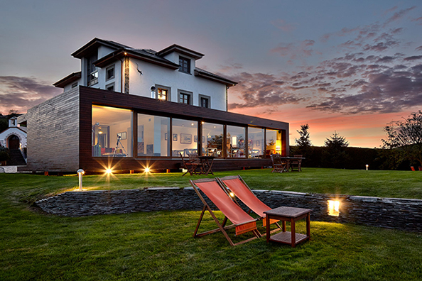
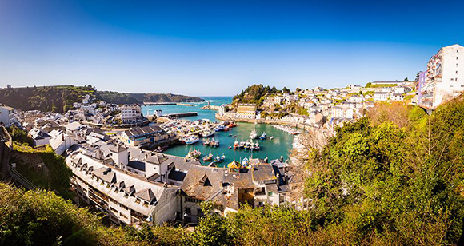
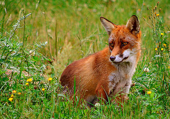
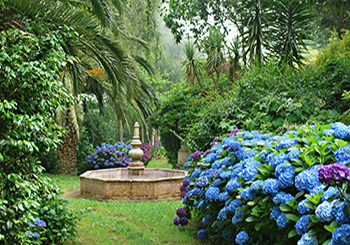
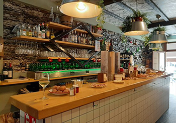
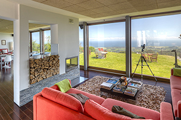
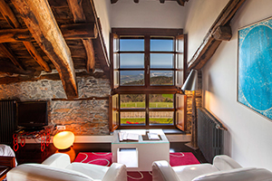
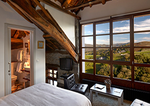
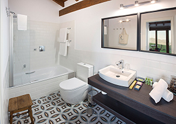
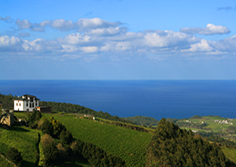

|  |
La Asturiana
La atrevida combinación de las arquitecturas moderna y tradicional asturiana
hacen de esta casa una estancia
singular. Su diseño, decoración y escogida ubicación le harán olvidarse de todo y sentirse
más
en un hotel que en una casa.
Entorno rural en su máxima expresión desde el cual es posible divisar los cabos de Busto,
Vidío y
Peñas, una ubicación privilegiada. A tan sólo 7 Km de Luarca,
preciosa villa pesquera, podrá disfrutar de las playas y el monte más valorados del
occidente de
Asturias.
|
Alrededores:La ubicación del hotel a 400 metros sobre el nivel del mar convierte un paseo por sus inmediaciones en un espectáculo visual. Fauna autóctona como jabalíes, corzos, zorros, rapaces, lechuzas y, por supuesto, vacas, que pueblan los prados y crean con sus cencerros y campanas el sonido característico del lugar. Para los más atrevidos, a pocos kilómetros se puede ascender a picos de 1.000 metros. Pueblos de interior y profundos bosques con ríos completan un amplio abanico de posibilidades para disfrutar el interior de la comarca.Luarca, también llamada «La Villa Blanca de la Costa Verde», tiene mucho que ofrecer. Puerto pesquero y capital del concejo de Valdés, cuenta con numerosos bares, sidrerías y restaurantes en los que degustar sidra, pescado fresco y platos típicos.Las fiestas patronales, junto a un amplio calendario de ferias, hacen de Luarca un lugar interesante para visitar en cualquier época del año. El hotel gestiona y reserva con empresas locales paseos a caballo y rutas en piragua y facilita información completa sobre todas las rutas que ofrece la comarca para practicar senderismo. También gestionamos visitas guiadas al jardín botánico de la Fonte Baixa situado en El Chano de Luarca.Os invitamos a que visiteis la página web de turismo de Luarca. |
 |
|  |  |  |
|  |  |
|  |  |  |
|
Luarca es una apacible villa marinera, que fue un importante puerto pesquero
desde la Edad Media, y que conserva muchos vestigios de ese glorioso pasado: antiguos barrios,
los restos de una fortaleza, la Mesa de Mareantes y Navegantes, puentes con leyenda, o palacios
y casas blasonadas. Por si esto fuera poco, vio nacer al Premio Nobel de Medicina, Severo Ochoa,
y de él conserva muchos recuerdos.
Luarca es tan blanca que no parece atlántica. Además, es la única de toda Asturias flanqueada por dos miradores y dos capillas: la blanca, al este, y la de San Roque al oeste, y la que tiene el cementerio más bello de todo el Cantábrico. Por supuesto, los alrededores de la Villa Blanca son una fuente inagotable de gratos descubrimientos: uno de los botánicos más grandes y exóticos de toda Europa; un Parque a medio camino entre la Tierra y el Cosmos; un Cabo donde soplan los mejores vientos y se confeccionan los mejores pasteles de España; una romería asturiana al pie de un acantilado, o las más bellas playas para disfrutar de insólitos parajes, de baños de ensueño o de olas increíbles. |